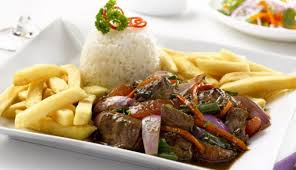

Lomo Saltado
02 de enero de 2018

Es un plato típico de nuestra gastronomía peruana, que data desde fines del siglo XIX, conocido antes como lomito de vaca o lomito a la chorrillana. Surge por la influencia de los chinos-cantoneses, que fusionado con la sazón peruana, se ha convertido en uno de los platos más consumidos del país.
Seco de Cabrito a la Norteña
03 de enero de 2018
Del norte del Perú te traemos uno de sus platos típicos, Seco de Cabrito con frejoles. Uno de esos platos con un sabor increíble a base de los mejores ingredientes propios del norte peruano (cabrito, ají amarillo, zapallo loche, chicha de jora). Es una comida típica de la región de Lambayeque (Trujillo, Chiclayo, Piura) que se consume principalmente durante las fiestas populares y familiares.